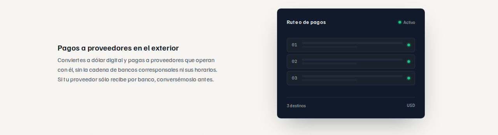

cowork · 2026-09-16 · /empresas › «Para qué lo usan»
Caso de prueba: pagos a proveedores en el exterior, el más difícil de los cuatro. Lo que cambia entre los tres es el tratamiento; la topología es la misma en los tres, porque es la que dice el texto: un origen, una frontera, un destinatario. Sin panel, sin sombra, sin interfaz simulada y sin ninguna cifra.
Elegido el tratamiento, lo extiendo a los cuatro casos con una silueta distinta cada uno: una línea que cruza · una masa quieta · una serie que se acorta · dos planos que se intercambian.
El widget simula un «Ruteo de pagos» con tres destinos activos: una pantalla de software que DLPay no tiene, y que sugiere que la operación la ejecuta DLPay hacia varios destinatarios.

El plano en tinta es el origen y su canto es el corte del isotipo: la frontera deja de ser una línea punteada prestada y pasa a ser la diagonal de la marca. El dinero es el mismo trazo dos veces —hueco dentro del plano, macizo fuera—, y la cuña se parte justo en el canto: el gesto de cruzar está dibujado, no anotado.
Conviertes a dólar digital y pagas a proveedores que operan con él, sin la cadena de bancos corresponsales ni sus horarios. Si tu proveedor sólo recibe por banco, conversémoslo antes.
La topología de UseCaseFigure con el trazo a 14 px en vez de 1,6 y al triple de
escala. Es el arreglo mínimo: no inventa gramática nueva y el «boceto» desaparece sólo con el
peso. También es el más conservador — y el que más se parece a lo que ya hay en la Home.
Conviertes a dólar digital y pagas a proveedores que operan con él, sin la cadena de bancos corresponsales ni sus horarios. Si tu proveedor sólo recibe por banco, conversémoslo antes.
La tinta vuelve, pero como banda que sangra hasta el canto de la página, no como tarjeta: sin radio, sin sombra y sin borde. Sobre tinta el verde de marca rinde 8,45:1 y puede llevar el trazo. Es el más editorial de los tres y el que más cambia la estructura de la sección, porque obliga a alternar sangrados a izquierda y derecha.
Conviertes a dólar digital y pagas a proveedores que operan con él, sin la cadena de bancos corresponsales ni sus horarios. Si tu proveedor sólo recibe por banco, conversémoslo antes.